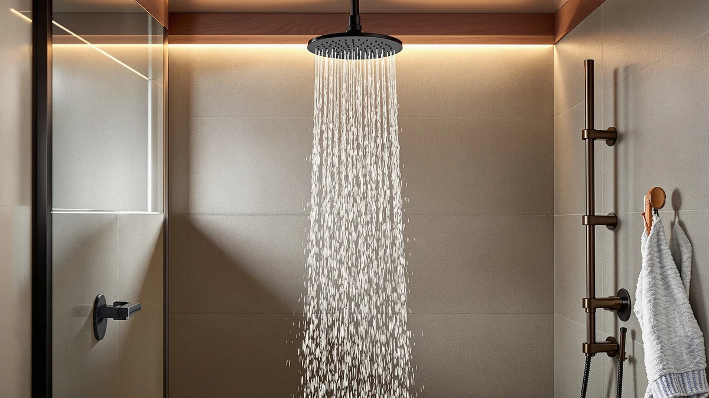

Shower Head Finishes Guide (2026)
Prices and picks verified as of August 2026. Independent, reader-supported reviews.


Things to Know Before You Buy
- Chrome costs the least and resists water spots best, which is why most builder-grade bathrooms ship with it.
- Brushed and matte finishes hide fingerprints and hard water spots better than polished or glossy ones.
- Oil-rubbed bronze and matte black run hotter to the touch in direct sun and can wear at high-contact points over years of use.
- A PVD (physical vapor deposition) coating outlasts a painted or lacquered finish by years, especially in hard water.
- Matching your shower head to your faucet and towel bar finish matters more to resale value than matching it to your shower door hardware.
This shower head finishes guide exists because most people pick a shower head by spray pattern and price, then get surprised a year later when the finish spots, dulls, or chips at the swivel joint. The metal or coating on the outside of your shower head does more than set the look of your bathroom. It determines how the fixture ages under daily contact with water, soap residue, and, if you're on hard water, mineral buildup.
You'll find shower heads sold in chrome, brushed nickel, oil-rubbed bronze, matte black, polished brass, and stainless steel, and the price gap between them can run from ten dollars to well over a hundred for the same internal spray mechanism. Some of that gap buys you a finish that outlasts daily use. Some of it buys you a trend that photographs well but scratches the first time you set down a bar of soap.
Below, we break down what each finish is actually made of, how it holds up against hard water and cleaning products, and how to match a new shower head to the faucet and hardware you already have without guessing.
What You Need to Know
Any shower head finishes guide has to start with what "finish" actually means on a plumbing fixture. It's not paint. Most shower heads use one of three finishing methods: electroplating, powder coating, or PVD (physical vapor deposition). Electroplating bonds a thin metal layer, usually chrome or nickel, onto a brass or plastic base through an electrical current. It looks good out of the box but the layer can be thin enough to wear through at contact points within a few years.
Powder coating sprays on a dry pigment that's then cured with heat. You'll see this on most matte black and colored finishes. It's durable against scratches but can fade or chalk under direct sun exposure in a bathroom with a skylight or south-facing window.
PVD is the finish you want if you're paying a premium. Manufacturers vaporize metal in a vacuum chamber and bond it to the fixture at a molecular level, which is why PVD-finished shower heads carry lifetime warranties against tarnishing while electroplated ones typically don't. You can usually tell PVD from electroplating by price: a PVD shower head rarely sells for less than $60, while electroplated chrome starts under $15.
The base metal underneath the finish matters too. Solid brass holds a finish longer than a zinc alloy or ABS plastic core, because the finish has less flex to crack against during temperature swings between hot showers and a cold bathroom.
Types and Categories
Chrome remains the default finish across nearly every shower head finishes guide you'll read, and for good reason. It's the cheapest to manufacture, it resists water spots better than any other finish because of its hard, non-porous surface, and it matches the chrome fixtures already installed in most rental units and older homes. Its downside is that scratches show clearly against the mirror-bright surface.
Brushed nickel trades some of that shine for a warmer, softer look and, practically, for better smudge resistance. The textured surface hides fingerprints and minor scuffs that would stand out on polished chrome, which makes it a better pick for households with kids or anyone who handles the shower head daily.
Oil-rubbed bronze and matte black both lean darker and pair well with black or wood-tone bathroom hardware. Oil-rubbed bronze is a living finish, meaning it develops a patina over time as the coating wears at high-touch points, which some homeowners like and others find inconsistent. Matte black hides water spots well but shows dust and hard water film more than people expect in a bright bathroom.
Polished brass and gold-tone finishes sit at the premium end and work best in bathrooms with matching brass faucets and cabinet hardware. Stainless steel, less common on shower heads than on kitchen fixtures, offers strong corrosion resistance and a neutral tone that ages evenly rather than showing wear spots.
How to Choose
Start with your water. If you're on well water or a municipal supply with high mineral content, prioritize finishes that resist water spots over finishes that look striking in photos. Chrome and stainless steel wipe clean easily. Matte black and oil-rubbed bronze show mineral film more readily and need more frequent wiping to stay looking sharp. A shower head finishes guide written for soft-water regions would rank these differently than one written for hard-water regions, so weigh your local water report before you weigh online reviews.
Next, match what's already in the room. Walk into the bathroom and look at the faucet, the towel bar, and the cabinet pulls. You don't need an exact finish match across every fixture, but the shower head and the faucet handle should read as the same metal family. Mixing warm-toned brass with cool-toned chrome in the same sightline reads as unfinished rather than eclectic, even when each piece is well made.
Then think about who uses the shower and how often. A household running the shower head daily for years benefits from spending more on a PVD or solid-brass finish, because the cost per year of ownership drops the longer the finish lasts. A rental unit or a guest bathroom used a few times a month doesn't need the same investment, since a $15 chrome head will likely outlast the tenant's lease.
Finally, check the warranty terms, not only the length. A "lifetime finish warranty" against tarnishing or pitting is a strong signal the manufacturer trusts the coating. A warranty that only covers the internal spray mechanism and excludes the finish tells you the finish is the weak point, regardless of what the finish is called on the box.
Common Mistakes to Avoid
Buyers skip past finish in most reviews and focus only on spray pattern and pressure, then miss the detail that matters for how the fixture will look in three years. Any shower head finishes guide worth reading should push you to read the material spec instead of the marketing photo, because a listing photo can't show you whether the coating is electroplated chrome or a painted imitation.
Scrubbing a matte or brushed finish with an abrasive pad or a harsh descaling brush is another common error. These finishes have a textured surface designed to diffuse light and hide smudges, and scrubbing hard enough to remove mineral buildup can also strip the texture, leaving behind a patchy, uneven sheen that no amount of polishing fixes.
People also underestimate how much bathroom lighting changes a finish. A brushed nickel head that looks neutral under warm bathroom bulbs can read distinctly cool or even silver under daylight-temperature LEDs. Bring a sample or check the finish under your actual bathroom lighting before committing, rather than trusting how it looks in an online product photo shot under studio lights.
Last, don't assume every finish sold under the same name performs the same. "Matte black" from one brand might be a durable PVD coating, while another brand's "matte black" is a spray-on powder coat that chips at the mounting arm within a year. Read the material description instead of the color name.
Care and Maintenance
Wipe your shower head dry after each use if you can. Water left sitting on any finish, even chrome, will eventually leave mineral spots as it evaporates. A microfiber cloth kept on the shower caddy takes ten seconds and prevents most of the buildup that otherwise needs a deep clean later.
For mineral deposits that have already formed, soak the head in a mix of equal parts white vinegar and water for 30 to 60 minutes rather than scrubbing. Vinegar dissolves calcium and lime buildup without touching most finishes, but keep the soak time short on oil-rubbed bronze and matte black, since prolonged acid exposure can strip the coating faster than it strips the mineral deposits. Rinse thoroughly afterward.
Skip abrasive cleaners, steel wool, and anything labeled "heavy-duty" for bathroom tile, since these are formulated for grout and porcelain, not for plated or coated metal. A soft cloth and a pH-neutral soap handle everyday grime on every finish covered in this shower head finishes guide without risking the coating.
If you notice green or white corrosion starting at the swivel joint or mounting arm, that's usually a sign water has gotten under the finish rather than a problem with the finish itself. At that point, replacement is more cost-effective than trying to restore the coating.
Our Top Picks
These three shower heads cover the finish tradeoffs we outlined above: a durable everyday chrome, a solid-metal build that shrugs off daily contact, and a compact chrome option for tight budgets.

Editor’s Pick
AquaDance 7" Premium High Pressure
Its chrome finish resists water spots better than nearly anything else at this price, and the ABS body keeps the weight low on the shower arm.
$39.99
Check Price on Amazon
Best Value
HammerHead Showers® Solid Metal 12
Solid metal construction means the finish has less flex to crack against, which is why this head holds up better than plastic-bodied competitors over years of daily use.
$119.95
Check Price on Amazon
Premium Choice
BRIGHT SHOWERS High Pressure Shower
A compact chrome head that wipes clean fast and fits shower stalls where a wider fixture wouldn't clear the walls.
$50.98
Check Price on AmazonFrequently Asked Questions
What's the most durable shower head finish?
PVD-coated finishes over solid brass last the longest, often backed by lifetime tarnish warranties. Standard electroplated chrome comes in second for durability and costs far less upfront.
Does shower head finish need to match the faucet exactly?
No. You want the shower head and faucet to sit in the same metal family, such as two warm tones or two cool tones, rather than an identical finish name from the same product line.
Why is my matte black shower head showing white spots?
Matte and powder-coated finishes show hard water film more visibly than glossy chrome because the textured surface catches mineral residue instead of letting it sheet off. Wipe the head dry after each use to prevent buildup.
Can you refinish a shower head instead of replacing it?
Refinishing plumbing fixtures at home rarely holds up in a wet, high-contact environment. Once a finish is chipped or pitted, replacing the shower head is more reliable than attempting a DIY refinish.
Is chrome or brushed nickel better for hard water?
Chrome resists water spots better because of its smooth, non-porous surface. Brushed nickel hides existing spots and fingerprints better between cleanings, but needs more frequent wiping in hard water areas to stay spot-free.
Verdict
Use this shower head finishes guide to weigh price, water hardness, and the fixtures already in your bathroom before you buy, since no single finish beats the rest for every household. Chrome remains the safest default: it costs less, resists water spots better than any other finish, and matches most existing hardware. Brushed nickel and matte black cost more but hide daily wear better if you keep a cloth nearby. Reserve oil-rubbed bronze, polished brass, and PVD coatings for bathrooms where you're building the whole fixture set around a specific look and you're willing to pay for a coating that lasts.
Among our picks, the AquaDance 7" Premium High Pressure gives you the strongest combination of finish durability and price for most households, which is why we lead with it. If your water runs hard or you're renting, start there and upgrade the finish later if your bathroom's other hardware calls for it.